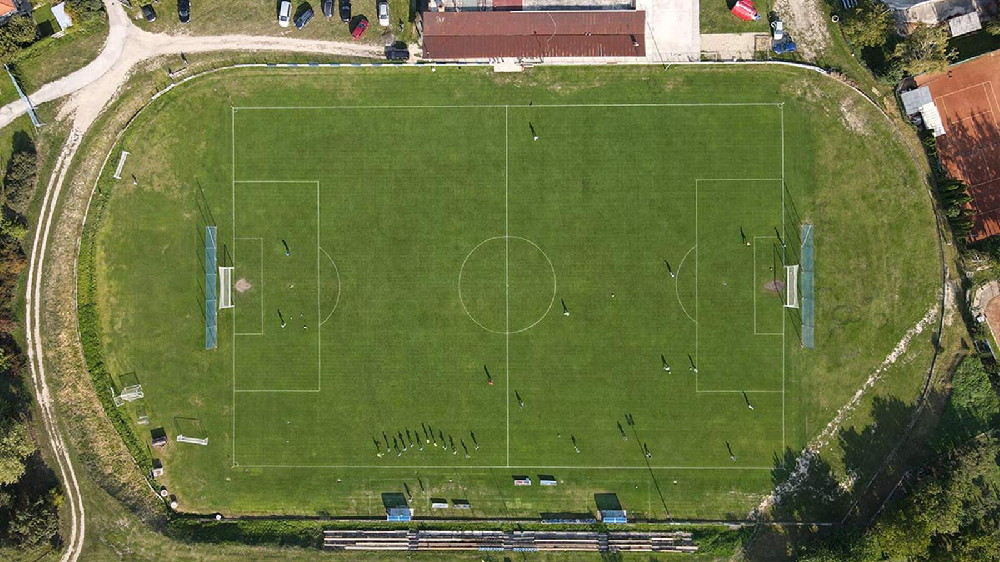

{% extends 'layout.html' %} 
{% block content %}
<h3 class="headline">O klube</h3>

<div class="">
    <!-- About Company -->
    <!-- Our Awesome Services -->
    <div class="section-full content-inner">
        <div class="container">
            <div class="row">
                <div class="col-lg-12 text-center section-head">
                    <br>
                    <p class="m-b0"></p>
                </div>
            </div>
            <center>

                <br><br>
                <p style="padding:4px;margin:2px;line-height:100%;">Rok založenia</p> <h3 style="padding:2px;margin:2px;line-height:100%;">1926 </h3>
                <br>
                <p style="padding:4px;margin:2px;line-height:100%;">Štadión</p><h3 style="padding:2px;margin:2px;line-height:100%;"> Futbalový štadión FC Slovan Modra</h3>
                <br>
                <p style="padding:4px;margin:2px;line-height:100%;">Klubové farby</p> <h3 style="padding:2px;margin:2px;line-height:100%;">Modrá a biela</h3>
                <br>
                <p style="padding:4px;margin:2px;line-height:100%;">Súťaž</p> <h3 style="padding:2px;margin:2px;line-height:100%;">MAJSTROVSTVÁ REGIÓNU - IV. LIGA BFZ</h3>
                <br>
                <p style="padding:4px;margin:2px;line-height:100%;">Výkonný výbor</p>
                 <h3 style="padding:2px;margin:2px;line-height:100%;">Predseda – Ing. Marián Gavorník</h3>
                 <!-- <h4 style="padding:2px;margin:2px;line-height:100%;">člen : <a href="tel:+421917659024">0917 659 024</a><br> -->
                 <br>
                 <h3 style="padding:2px;margin:2px;line-height:100%;">Člen – Peter Marinič</h3>
                    <h4 style="padding:2px;margin:2px;line-height:100%;">manažér ,,A" mužstva<br>
                    </h4>
                    <br>
                 <h3 style="padding:2px;margin:2px;line-height:100%;">Člen – Mgr. Michal Kintler</h3>
                    <h4 style="padding:2px;margin:2px;line-height:100%;">manažér mládeže<br>
                    </h4>
                    <br>
                 <h3 style="padding:2px;margin:2px;line-height:100%;">Člen – Ing. Slavomír Fuňa</h3>

                    <br>
                    <p style="padding:4px;margin:2px;line-height:100%;">Kontrolná komisia</p> 
                    <h3 style="padding:2px;margin:2px;line-height:100%;">predsedkyňa - Ing. Lucia Trnovcová</h3>
                    <h3 style="padding:2px;margin:2px;line-height:100%;">člen - Ing. Michal Brozman</h3>
                    <h3 style="padding:2px;margin:2px;line-height:100%;">člen - Štefan Vrábel</h3>

                <br>
                <p style="padding:4px;margin:2px;line-height:100%;">Kontakt</p>
                <h3 style="padding:2px;margin:2px;line-height:100%;">fcslovanmodra@gmail.com</h3>
                <!-- <h4 style="padding:2px;margin:2px;line-height:100%;">člen : <a href="tel:+421917659024">0917 659 024</a><br> -->
                <br>   
                <!--

                    <br>
                    <p style="padding:4px;margin:2px;line-height:100%;">Generálny sekretár</p> 
                    <h3 style="padding:2px;margin:2px;line-height:100%;">Dominik Dugovič</h3>
                    <h4 style="padding:2px;margin:2px;line-height:100%;">Mobil: <a href="tel:+421917937501">0917 937 501</a><br>
                        E-mail: dominikdugovic@gmail.com
                        
                    </h4>
                -->
                <br>

         

                <p style="padding:4px;margin:2px;line-height:100%;">Úspechy klubu</p>
                <h3 style="padding:4px;margin:2px;line-height:100%;">víťaz V. ligy BFZ-vidiek 2015/2016</h3>
                <h3 style="padding:4px;margin:2px;line-height:100%;">víťaz VI. ligy ObFZ-vidiek 2021/2022</h3>
                <h3 style="padding:4px;margin:2px;line-height:100%;">víťaz V. ligy BFZ 2022/2023</h3>
                <br><br>
                
                <br><br>
                <h4 style="padding:2px;margin:2px;line-height:100%;">
                    Kalinčiakova 6<br>
                    900 01 Modra<br>

                    IČO: 36065021<br>
                    DIČ: 2021758002<br>
                    IBAN: SK53 0900 0000 0050 6077 7236

                </h4>

            </center>
            <br>
                    <center>
                        <div class="row">

                            <div class="col-4">
                                
                        </div>
                        <div class="col-1">
                            
                            <a href="https://www.facebook.com/fcslovanmodra" target="_blank" class="product-img2"><i style="font-size: 200%;" class="fa fa-facebook-f"></i></a>
                        </div>
                        <div class="col-2">
                            
                            <a href="https://www.youtube.com/@fcslovanmodra6225" target="_blank" class="product-img2"><i style="font-size: 200%;" class="fa fa-youtube"></i> </a>
                        </div>
                        <div class="col-1">
                            
                            <a href="https://www.instagram.com/fcslovanmodra/" target="_blank" class="product-img2"><i style="font-size: 200%;" class="fa fa-instagram"></i> </a>
                        </div>
                        <div class="col-4">
                            
                        </div>
                    </div>
                    </center>
                    
            
        </div>
    </div>
    <!-- About Company END -->
    
</div>

{% endblock %}
